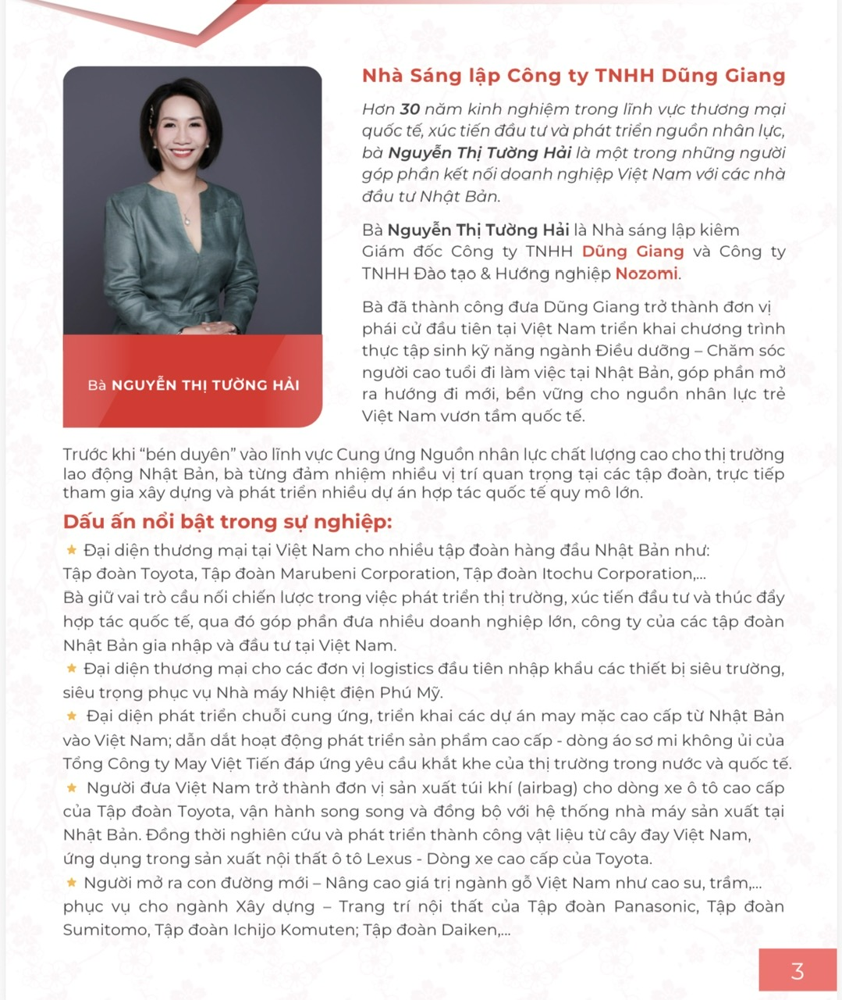
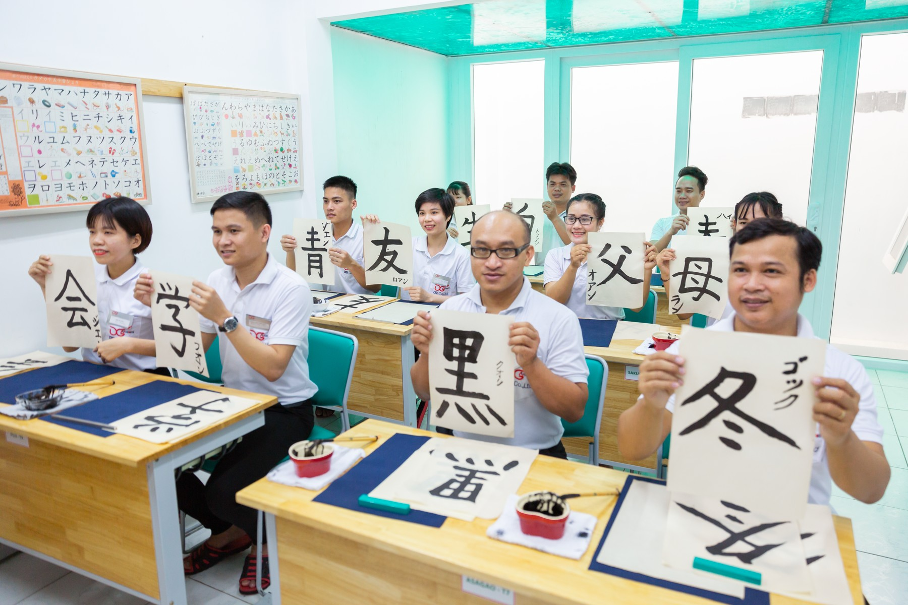

ĐÀO TẠO & HƯỚNG NGHIỆP01
NOZOMI希望 — HY VỌNG
Chuẩn bị nguồn nhân lực Việt Nam có năng lực, bản lĩnh và tác phong chuyên nghiệp, sẵn sàng làm việc tại doanh nghiệp Nhật Bản ở Nhật và Việt Nam.
Khám phá năng lực đào tạo ↗Hơn 30 năm kết nối thương mại, đầu tư và nguồn nhân lực giữa Việt Nam và Nhật Bản — từ những mối quan hệ bền vững đến hai sứ mệnh vì con người.
Đọc câu chuyện của bà Hải ↗
Mỗi kết nối tốt
mở ra một tương lai.
Trước khi dành tâm huyết cho đào tạo và chăm sóc sức khỏe, bà Hải đã có hơn ba thập kỷ làm việc trong thương mại quốc tế, xúc tiến đầu tư và phát triển thị trường.
Bà từng là đại diện thương mại tại Việt Nam cho nhiều tập đoàn Nhật Bản, kết nối các dự án và chuỗi cung ứng trong những lĩnh vực đòi hỏi chất lượng, kỷ luật và tầm nhìn dài hạn.
Đầu tư cho con người hôm nay là nền tảng cho sự phát triển ngày mai.
Chuẩn bị nguồn nhân lực Việt Nam có năng lực, bản lĩnh và tác phong chuyên nghiệp, sẵn sàng làm việc tại doanh nghiệp Nhật Bản ở Nhật và Việt Nam.
Khám phá năng lực đào tạo ↗Cầu nối Việt–Nhật trong chăm sóc sức khỏe chủ động. Đồng hành cùng khách hàng tiếp cận dịch vụ tại Nhật Bản và mở ra cơ hội hợp tác giữa doanh nghiệp hai nước.
Tìm hiểu cách chúng tôi đồng hành ↗Không chỉ là một chứng chỉ. NOZOMI hướng đến năng lực làm việc thực tế, khả năng hòa nhập và phát triển lâu dài trong môi trường Nhật Bản.
Hiểu bản chất, xây nền tảng vững.
Chuyên môn gắn với thực tiễn.
Rèn trách nhiệm từ mỗi ngày.
Tự lập, hòa nhập và tiến xa.
Chương trình được điều chỉnh theo năng lực đầu vào, ngành nghề và yêu cầu của doanh nghiệp tiếp nhận.
Bảng chữ cái, phát âm, phương pháp tự học và kỷ luật cá nhân.
Từ vựng, ngữ pháp và phản xạ hội thoại trong sinh hoạt, công việc.
Tiếng Nhật chuyên ngành và ôn kỹ năng đặc định theo chương trình.
Duy trì sau tốt nghiệp, giáo dục định hướng và chuẩn bị trước xuất cảnh.
ENMUSUBI đồng hành cùng người Việt trên hành trình tiếp cận dịch vụ chăm sóc sức khỏe tại Nhật Bản, từ kết nối tư vấn đến hỗ trợ trải nghiệm tại địa phương.
Trao đổi cùng ENMUSUBI ↗Kết nối nhu cầu cá nhân với cơ sở y tế tại Nhật Bản, hỗ trợ sắp xếp tư vấn và thăm khám.
Hỗ trợ hồ sơ, thủ tục visa y tế và phiên dịch tại Nhật để khách hàng thuận tiện trao đổi với đơn vị chuyên môn.
Kết nối doanh nghiệp Việt Nam và Nhật Bản, cùng tìm kiếm cơ hội hợp tác trong lĩnh vực chăm sóc sức khỏe.
Việc đánh giá sức khỏe và chỉ định chuyên môn do cơ sở y tế và bác sĩ phụ trách.
Năm kinh nghiệm trong thương mại quốc tế, xúc tiến đầu tư và phát triển nguồn nhân lực.
Tôi chọn Nhật Bản là nơi khởi nguồn để Dũng Giang Nozomi ra đời.
Với bà Nguyễn Thị Tường Hải, mỗi người trẻ được định hướng và đào tạo bài bản đều có thể góp phần xây dựng một xã hội vững mạnh hơn.
Từ kinh nghiệm kết nối doanh nghiệp Việt Nam với Nhật Bản, bà dành tâm huyết cho một môi trường giúp thế hệ trẻ phát triển ngôn ngữ, kỹ năng và thái độ nghề nghiệp — để tự tin chạm tới cơ hội của mình.

Trao đổi với đúng đội ngũ để tìm hướng đồng hành phù hợp với bạn và doanh nghiệp.
21 Đường số 63-TML, Phường Cát Lái,
TP. Hồ Chí Minh
Ms. Quyên — Tư vấn & kết nối dịch vụ tại Nhật Bản
Bắt đầu trao đổi ↗